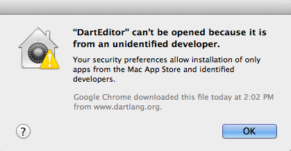

Troubleshooting Dart Editor
Find solutions to Dart Editor problems for , , or . If we missed something, please let us know.
Contents
- Getting your system architecture
- Launching Dart Editor
- Launching Dartium
- Using Eclipse
- Clearing all settings
- Other known issues
Getting your system architecture
If you don't know whether you have 32-bit or 64-bit Linux,
use the command uname -a.
If 64 is in the output,
you have 64-bit Linux;
otherwise, you have 32-bit Linux.
Almost all Mac OS X systems have a 64-bit OS, so we recommend using the 64-bit Dart Editor. If you encounter problems, try the 32-bit version.
If you don't know whether you have 32-bit or 64-bit Windows, see Microsoft's support site.
Launching Dart Editor
Your Java version should have the same bit width as your Dart Editor version. For example, if you're using a 64-bit Dart Editor, then you should use 64-bit Java. Otherwise, you might see a message like this when you try to launch Dart Editor:
Failed to load the JNI shared library "C:\Program Files(x86)\Java\jre6\\bin\client\jvm.dll
You can find the bit width of your default Java version using the command
java -version.
If you're using 64-bit Linux but have 32-bit Java libraries, Dart Editor won't work.
The fix: Use a 64-bit Java JDK. You can get a 64-bit JDK 7 from Java SE Development Kit 7 Downloads. If you already have a 64-bit JDK but it's not the default, you can specify the Java runtime.
A few things can go wrong when launching Dart Editor on a Mac:
- Unidentified developer
- "DartEditor.app" is damaged (64-bit only)
- Java installation failure
- Slow startup
- 32-bit Mac
Unidentified developer
If you're running Mac OS 10.8 (Mountain Lion), your computer might refuse to start Dart Editor because it's not from the Mac App Store or an identified developer. Until we fix this problem (bug #5088), you can work around it.

The easiest workaround: When launching Dart Editor for the first time, don't double-click the Dart Editor icon. Instead, right-click (or Ctl+click) it to bring up a context menu, and choose Open. Then, in the dialog that comes up, click Open.
An alternative workaround is to change your security settings. Go to System Preferences > Security & Privacy. In the General tab under Allow applications downloaded from:, choose Anywhere. You should now be able to start Dart Editor. Once you've run Dart Editor, you can change the preference back to its previous setting.
"DartEditor.app" is damaged (64-bit only)
Sometimes when you try to launch a new, 64-bit build of Dart Editor, Mac OS X incorrectly displays a corruption warning:
"DartEditor.app" is damaged and can't be opened. You should move it to the Trash.
The workaround is to download and install the 32-bit version of Dart Editor.
Java installation failure
When you try to run Dart Editor but don't have a Java SE 6 runtime, Dart Editor offers to install Java for you. If the installation doesn't work, you can either restart Dart Editor or install Java yourself.
Slow startup
If you use Sophos Anti-Virus, Dart Editor (like most Java applications) starts up 10-15 times slower than normal.
The fix: Turn off scanning of the app's JAR files. For example:
- In Sophos Anti-Virus preferences, choose On-access Scanning.
- If the preferences are locked, click the lock and enter your password.
- Click Excluded Items and then the + sign.
- Navigate to the directory that contains
DartEditor. - Search for files under that directory
with names that end in
.jar. - Select all these
.jarfiles, and click Open.
32-bit Mac
If you're using one of the increasingly rare 32-bit Macs, you can't launch the 64-bit version of Dart Editor. Instead, you see a warning like this:

The fix: Download and install the 32-bit version of Dart Editor.
Specifying the Java runtime
If necessary, you can specify the Java runtime that Dart Editor uses.
Go to your Dart installation directory and
add the following two lines to DartEditor.ini
immediately before the existing
‑vmargs line:
-vm /full/path/to/java
Important:
On Windows, use double backslashes (\\)
as the directory separator:
-vm c:\\bin\\java_jdk1.7.0\\bin\\javaw.exe
For example, DartEditor.ini might have:
... -vm /usr/local/buildtools/java/jdk-64/bin/java -vmargs ...
Launching Dartium
By default,
when you click Dart Editor's Run button
 ,
your web app runs in Dartium.
If you instead see a message that
you need to download a new version of Dartium,
your software is old.
,
your web app runs in Dartium.
If you instead see a message that
you need to download a new version of Dartium,
your software is old.
The fix: Download and install a new version of Dart Editor. You'll get an updated version of Dartium, plus the latest improvements to Dart Editor. Alternatively, download a new version of Dartium and substitute it for the copy that's in your Dart installation directory.
Using Eclipse
If Dart Editor and Eclipse
share the same workspace directory,
they'll save conflicting settings,
resulting in warnings and errors from both
Dart Editor and Eclipse.
The fix: Don't use the same workspace for Dart Editor and any other Eclipse-based software.
Clearing all settings
Dart Editor settings are in a platform-dependent directory, so you don't lose them when you update Dart Editor. If your settings become corrupted or you want to see the new user experience, delete the settings directory.
The following table shows where Dart Editor settings are saved.
| Platform | Location of settings |
|---|---|
| Windows | <user's home directory>\DartEditor |
| Linux | $HOME/.dartEditor |
| Mac | $HOME/Library/Application Support/DartEditor |
Other known issues
Some of the more common problems on Linux include:
- Dart Editor crashes on specific versions of Linux.
- Dart Editor top-level menu problems on specific versions of Linux.
Dart Editor issues lists all of the known bugs in Dart Editor.
Click an issue's star to receive updates about it. You can also file new issues and add comments to existing ones.